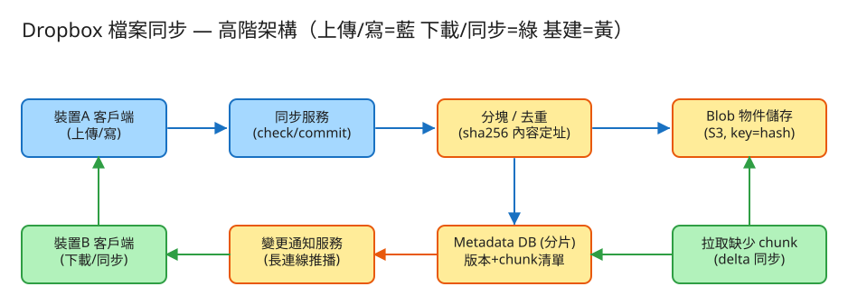

D 串流計算/儲存分發 看故事就懂 輕鬆讀 25 分鐘
你在公司電腦改了一份報告，回到家打開筆電，發現報告自動就是最新版了——你什麼都沒做。 這就是 Dropbox（或 Google Drive、iCloud）在幫你做的事：讓你每一台裝置上的檔案，永遠長一樣。
聽起來很簡單對吧？「不就是把檔案傳上雲端，再傳下來」。但魔鬼藏在三個地方：你的檔案可能幾百 GB、 你只改了一行字、而且你可能兩台電腦同時在改同一份檔。把這三件事做好，才是這題真正的難點。
很多人第一個念頭是：「檔案改了，就把整個檔重新傳上去不就好了？」我們用一個你天天在做的事來看為什麼不行——
檔案同步一模一樣。一個 1 GB 的影片你只剪掉幾秒，若每次都重傳整個 1 GB，你的網路會被塞爆，雲端也存了一堆幾乎一樣的東西。
所以這題的核心精神就是：「不要重來、只處理有變的那一小部分」。為了做到這件事，系統先把每個檔案切成很多小塊 （像把報告拆成一頁一頁），之後所有的聰明操作，都是建立在「以小塊為單位」之上。
💭 停一下：如果系統是「以整個檔案」為單位，而不是「以小塊」為單位，前面說的「只寄改動那頁」還辦得到嗎？
別被「系統」嚇到。整件事其實就是闖 4 關，每一關都對應一個你已經懂的生活直覺：
第一步，把檔案切成固定大小的小塊（例如每塊 4 MB）。一個 1 GB 的檔案就被切成大約 256 塊。
每一塊都會算出一個「指紋」（一段叫 sha256 的代碼）。內容一樣的塊，指紋就一樣；內容只要差一個字，指紋就完全不同。記住這個「指紋」，下一關馬上要用。
切好塊、算好指紋後，系統會發現：很多塊的內容其實一模一樣。可能是同一份檔案的重複段落，也可能是不同人都存了同一個熱門影片。
這招叫 去重（dedup）。因為「指紋一樣 = 內容一樣」，系統上傳前會先問雲端：「這幾個指紋你有沒有？」 雲端只回「我缺這幾塊」，你就只傳缺的。光這一招，就能省下接近一半的儲存空間。
這一關就是把「寄報告只寄改動頁」變成真的。檔案改過後，系統把新版本重新切塊，跟上次的塊清單比一比， 找出哪幾塊是新的，就只傳這幾塊。
這招叫 增量同步（delta sync）。改 1 GB 大檔的一小段，可能只傳幾 MB。
最棘手的一關。你在公司電腦改了報告，同事在家裡也改了同一份（兩人都還沒同步到對方的版本）。 現在雲端收到兩個都說「我是基於版本 7 改的」的新版本——該聽誰的？
這叫衝突副本（conflicted copy）。系統靠每個版本附帶的「我是基於哪一版改的」資訊，
判斷出「有人搶先提交了」，於是把較晚那份另存一份，例如 report (裝置B 的衝突副本).docx。
核心原則：寧可留兩份讓你煩，也絕不偷偷蓋掉你的心血。
工程上的「取捨」聽起來很抽象。換個方式記：這個系統最怕三件事，每個設計都是為了避開某個「怕」。

✏️ 用 Excalidraw 開啟編輯（diagram.excalidraw）白話導讀，跟著一次同步的旅程走：
注意圖裡「內容本體（Blob）」和「帳本（Metadata）」是分開的兩個倉庫——這個分家很關鍵，名詞表之後 Part 2 會解釋為什麼。
看完上面，這些詞你其實都已經懂了，這裡只是把「工程術語 ↔ 白話」對起來，Part 2 會用到：
| 工程術語 | 白話解釋 |
|---|---|
| chunk（分塊） | 檔案切出來的「一頁」，固定大小的小塊 |
| hash / sha256 | 每塊內容的「指紋」：內容一樣指紋就一樣 |
| 內容定址 | 用「指紋」當地址來存取塊（同內容 → 同地址） |
| dedup（去重） | 「相同段落不重抄」：一樣的塊只存一份 |
| delta sync（增量同步） | 「改報告只寄修改頁」：只傳變動的塊 |
| 衝突副本 | 兩邊同時改 → 兩份都留，一份標「衝突副本」 |
| 版本向量 | 每版附帶「我基於哪版改的」，用來判斷誰跟誰衝突 |
| metadata（後設資料） | 「帳本」：記檔案有哪些版本、每版是哪串塊 |
| blob 物件儲存 | 「倉庫」：存塊的內容本體，量大、要超耐久 |
| ref_count（引用計數） | 「這塊被幾個檔用著」，沒人用了才能清掉 |
| 斷點續傳 | 傳到一半斷線，重連後只補沒傳完的塊 |
| API | 系統之間講好的「點餐單」格式：你給我什麼、我回你什麼 |
| 分片（sharding） | 資料太多，拆到很多台機器分開放 |
我們估幾個關鍵數字（數字不必背，重點是感受它的「形狀」）：
| 估什麼 | 大概數字 | 所以呢？ |
|---|---|---|
| 有多少使用者 | 5 億註冊、5000 萬天天用 | 每人多裝置（手機 + 電腦）要同步 |
| 總共多少檔案 | 每人 5000 檔 → 約 2.5 兆檔 | 帳本一台機器裝不下，必須分到很多台 |
| 要存多少資料 | 每人 50 GB → 共約 25 EB | 天文數字，所以「省空間」是錢的問題 |
| 去重能省多少 | 不同人重複率約 30%~50% | 實體空間可省近一半 → 直接省一半的錢 |
💭 停一下：為什麼「去重」對 Dropbox 來說，不只是技術問題，更是「錢」的問題？
這題只要記住三張「點餐單」，剛好對應前面的關卡：
① 上傳前先問：這些塊你有沒有？（去重的關鍵一步）
POST /files/{檔案}/chunks:check
給我：{ 一串塊的指紋 }
我回：{ 我缺這幾塊 } ← 你只要傳缺的就好這就是「同上、不重抄」的精神：先問清楚雲端缺什麼，只傳缺的，同時省下頻寬和儲存。
② 上傳缺的塊（用「指紋」當地址）
PUT /chunks/{指紋} Body: 塊的內容
→ 已經有了就「不重複存」（這就是去重）為什麼用指紋當地址？因為內容一樣指紋就一樣，同一個指紋傳第二次系統直接當「已有」忽略——天然去重，還順便支援斷點續傳（斷線後重問一次缺哪些，只補沒傳完的）。
③ 提交新版本：送出「這版是哪串塊 + 我基於第幾版改的」
POST /files/{檔案}/commit
給我：{ 基底版本=7, 塊清單=[指紋1, 指紋2, ...] }
我回：{ 新版本=8 }
或回：409 衝突 { 伺服器已是第9版, 幫你存了「衝突副本」 }關鍵在那個「基底版本=7」：如果雲端發現自己已經是第 9 版（有人搶先提交了），就知道發生衝突，於是不硬蓋，改成幫你存一份衝突副本。
每個檔案記：檔案ID、擁有者、路徑、最新版本；每個版本記：這版是「哪串塊（有順序的指紋清單）」、誰提交的、基於哪版。
每塊記：指紋（當地址）、大小、被幾個版本用著(ref_count)、實際存在哪。塊的內容本體放在「物件儲存」，每塊存好幾份保命。
| 哪裡會塞車 | 怎麼拓寬 |
|---|---|
| 帳本太大：兆級檔案一台機器裝不下 | 依擁有者把帳本拆到很多台機器（分片）；同帳號資料放同一台好交易 |
| 倉庫要存 EB 級、還不能弄丟 | 每塊存好幾份在不同地點；很少用的冷資料搬到便宜倉庫 |
| 大檔整傳塞滿上行頻寬 | 分塊 + 去重 + 增量同步，成本只正比於變動量 |
| 千萬裝置都掛著等通知 | 通知用長連線而非一直輪詢；以使用者為單位推「該拉取」訊號 |
| 刪檔時誤刪了還有人在用的共用塊 | 用引用計數，歸零再加一段寬限期才真的清掉 |
「Part 1 的三個怕」是核心。這裡補幾個常被面試官追問的：
chunks:check，
已經傳上去的塊會被回報為「已存在」，系統就只續傳剩下沒傳完的塊，不用從頭來。這就是斷點續傳，是分塊的天然好處。讀十遍不如玩一遍。這題有一個真的可以跑的小程式，讓你親眼看到「分塊 + 去重 + 增量 + 衝突」：
# 啟動（在這題的 demo 資料夾裡）
cd demo
php -S localhost:8020 -t public
# 然後瀏覽器打開 http://localhost:8020玩過 demo 了，來掀開引擎蓋看看「那幾關到底是哪幾段程式做的」。 好消息：核心只有四個小檔，剛好對應前面講的四關。不用會 PHP，我把程式翻成白話、只留關鍵那幾行，看註解就懂。
第一關，把檔案切成固定大小的小塊，並幫每一塊算一個指紋（hash）。指紋就是後面去重、比對的鑰匙。
function 切塊(內容) {
塊清單 = []
一塊一塊往後切（每塊固定大小，例如 16 個位元組）:
這塊 = 內容的這一段
塊清單.加入({ 指紋: 算指紋(這塊), 內容: 這塊 })
return 塊清單
}
function 算指紋(資料) {
return "sha256:" + sha256(資料) // ← 內容一樣 → 指紋一定一樣
}關鍵就是算指紋那一行：相同內容必得相同指紋。這個「同內容 → 同指紋」的特性，正是下一關「指紋一樣就不再存」能成立的地基。
要把一塊存進倉庫前，先看「這個指紋我有沒有？」。有了就不再存第二份，只把「被幾個人用著」的計數加一。這就是「相同段落寫『同上』」。
function 存一塊(指紋, 資料) {
if (倉庫裡已經有這個指紋) {
引用計數[指紋] += 1 // ← 同上！不重抄，只記「我也用這塊」
累計省下的空間 += 資料大小
return 去重命中 // 沒有真的多存
}
倉庫[指紋] = 資料 // 第一次見到，才真的落地一份
引用計數[指紋] = 1
return 新存了一塊
}就這個 if：指紋一樣 = 內容一樣 → 直接跳過不存。光這招就能省下接近一半的硬碟。引用計數 是為了刪檔時知道「這塊還有沒有別人在用」，歸零才能安全清掉。
上傳一個檔案，不是整檔硬塞，而是先切塊算指紋，再一個一個問倉庫「這塊你有嗎？」，挑出缺的（missing）才傳。這就是「改報告只寄修改頁」。
function 上傳(檔案, 內容, 裝置, 基底版本) {
塊清單 = 切塊(內容) // ← 第 1 關
缺的塊 = []
for 每一塊 in 塊清單:
if (倉庫沒有這塊的指紋)
缺的塊.加入(這塊) // ← delta：只挑出新出現的塊
// ……（先做衝突偵測，見第 4 關）……
只把「缺的塊」存進倉庫 // ← 省頻寬 + 去重
沿用的舊塊只把引用計數 +1
新版本 = 帳本.提交(檔案, 塊清單的指紋, 裝置)
return { 共幾塊, 缺幾塊, 沿用幾塊 } // 沿用越多 = 省越多
}重點是那個 if (倉庫沒有這塊)：只有沒見過的塊才進 缺的塊。改一個字的大檔，只有變動那一兩塊算「缺」，其餘整批沿用——傳輸量只跟「你改了多少」有關。
💭 停一下：為什麼是「一塊一塊問倉庫缺不缺」，而不是「比對上一版的塊清單」？兩種想法會得到一樣的結果嗎？
提交新版本前，先看一句「我基於的版本，是不是已經落後了？」如果有人搶先提交過，就不硬蓋，把較晚這份另存成衝突副本，兩份都留。
伺服器版本 = 帳本.最新版本(檔案)
有衝突 = (伺服器版本 > 0 且 基底版本 < 伺服器版本)
// ↑ 我以為是第 7 版，但伺服器已經是第 9 版 → 有人搶先了
if (有衝突) {
// 不偷偷覆蓋！另存一份，名字標清楚是誰的衝突副本
衝突檔名 = 檔案 + "（" + 裝置 + " 的衝突副本）"
存缺的塊；帳本.提交(衝突檔名, 塊清單, 裝置)
return { 狀態: "conflict", 衝突副本: 衝突檔名 } // ← 兩份都在
}
// 沒衝突，才正常提交成新版本核心就那行 基底版本 < 伺服器版本：一旦成立就代表「我改的時候，別人已經先改過了」。系統絕不靜默覆蓋，寧可留兩份讓你自己選，這就是report（裝置B 的衝突副本）.docx 的由來。
| 關卡（前面講的） | 哪個檔 | 關鍵那段 |
|---|---|---|
| ① 切塊 + 算指紋 | Chunker | 切塊() + 算指紋() |
| ② 去重（同上不重抄） | BlobStore | 存一塊() 的那個 if |
| ③ 增量同步（只傳改動） | SyncService | 挑出 缺的塊 的迴圈 |
| ④ 衝突就留兩份 | SyncService | 基底版本 < 伺服器版本 的判斷 |
👉 重點：真實系統會把「JSON 檔 + 一塊塊問」換成內容定址儲存（S3/物件儲存）+ 分片帳本 + Redis， 切塊也會從「固定大小」升級成「看內容切（CDC）」，但分塊去重、delta 增量、衝突留兩份這幾段判斷邏輯一字都不用改。所以讀懂這個小 demo，你就讀懂了這題的核心。
先不要看答案，自己用講給朋友聽的方式回答看看（講得出來才是真的懂）：
Dropbox 同步 = 把檔案切成小塊的聰明同步。
4 個關卡：① 切塊（拆成一頁頁）→ ② 去重（相同塊只存一份，像「同上不重抄」）→ ③ 增量同步（只傳改動的塊，像「改報告只寄修改頁」）→ ④ 衝突就留兩份（不偷偷覆蓋）。
3 個怕：怕弄丟檔（多副本保命）、怕偷偷蓋掉心血（衝突留兩份）、怕塞爆網路與硬碟（只處理變動量）。
工程細節一句話：成本花在「存」與「傳」→ 用「點餐單(API)」先 check 再傳，只傳缺的塊 → 帳本(metadata)與倉庫(blob)分家、各自擴展 → 引用計數管何時能安全清塊。
想看更精簡、面試速查用的版本？👉 前往完整版（同樣內容的工程速查格式）。